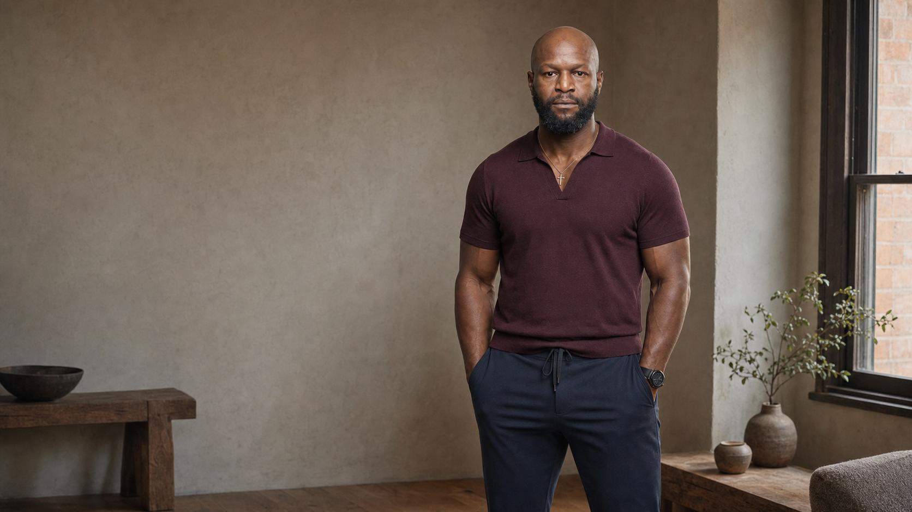
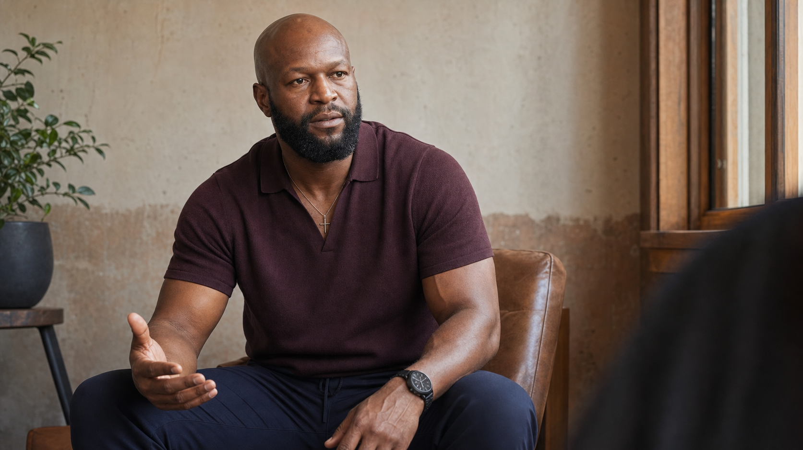
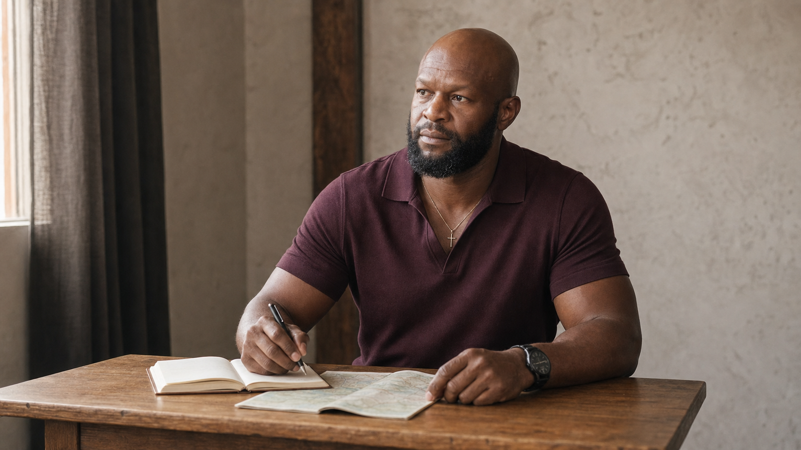

Strive
Prepare. Repeat. Keep the standard. Stay with the work when the pressure rises.
Life in Full
A former NFL tackle and entrepreneur showing driven people how discipline, achievement, and enjoyment can belong in one full life.
Meet Gosder
Striveand savor.
Work with devotion.
Enjoy without guilt.
01
Gosder is the unifying example. Football, business, mentorship, community work, faith, learning, and a wide range of lived interests all point to the same way of living.
His story is not about trading ambition for balance. It is about keeping achievement in service of a life worth living.
That means doing the work, opening the room for others, and being fully present for what the work makes possible.


02
Pursue achievement with discipline, devotion, and resilience. Then participate fully in the relationships, culture, pleasure, peace, and experience the work was meant to make possible.
Prepare. Repeat. Keep the standard. Stay with the work when the pressure rises.
Recover. Connect. Learn. Travel. Create. Enjoy the life being built without guilt.
03
Gosder's personal brand sits above the roles and ventures. Each becomes proof of the same standards, curiosity, responsibility, and commitment to a fuller life.
A
Preparation, repetition, resilience, and responsibility under pressure.
B
Building, learning, making decisions, and taking responsibility for what comes next.
C
Creating access, sharing preparation, and helping committed people enter the room ready to act.
04
Direct observations on pressure, practice, belonging, and the permission to enjoy what you build.

01
Ambition creates weight. It does not require guilt around recovery, connection, culture, or pleasure.
02
Striving and savoring are not competing identities. Each protects the meaning of the other.
03
Access matters. So do standards, preparation, and the responsibility to make opportunity usable.

05
Gosder brings a lived operating philosophy about pressure, resilience, devotion, and balance to rooms of doers, leaders, and builders.
06
For speaking, mentorship, partnerships, and thoughtful collaborations.
Contact details to be added before launch.